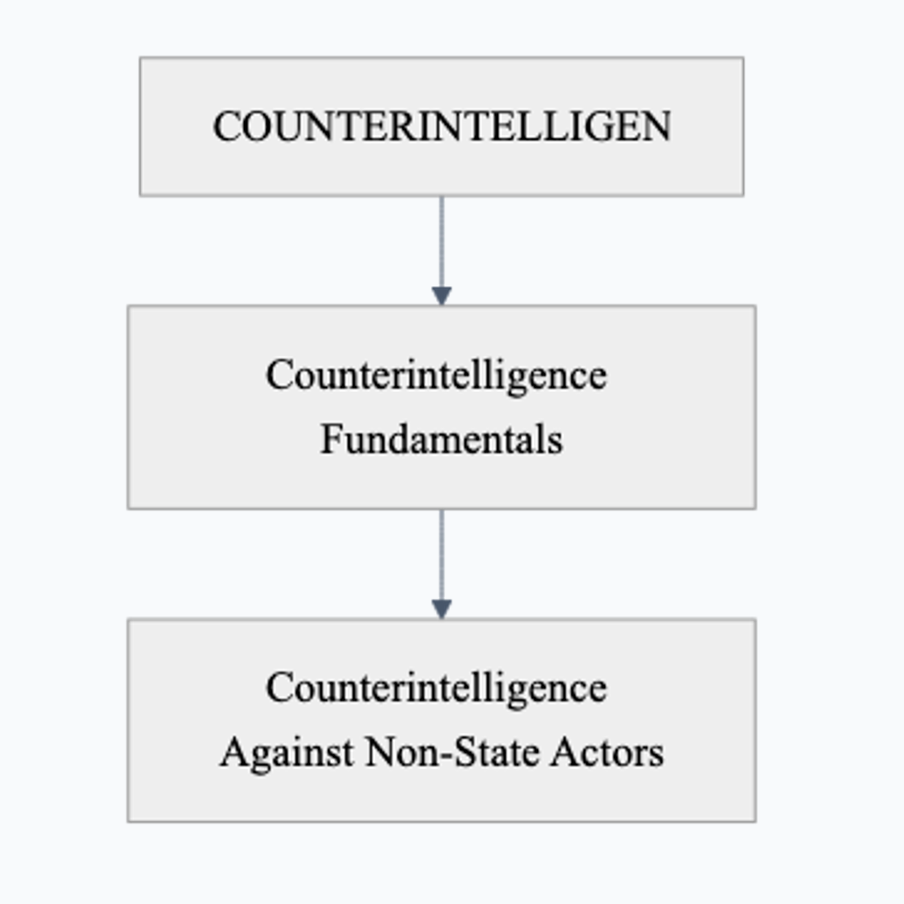
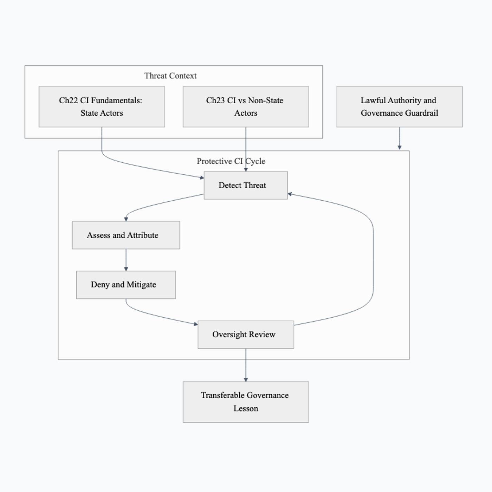

COUNTERINTELLIGENCE
COUNTERINTELLIGENCE learning spine and source route: unit purpose, module order, and evidence handoff
Navigation. Parent section: [@sec:part-counterintelligence].
source-integrity defense discipline spine: domain question and learning focus
Navigation. Parent section: [@sec:part-counterintelligence].
This unit teaches source-integrity defense. CI lessons teach deception awareness, source integrity, insider-risk signals, corroboration, and protected escalation as defensive governance.
source-integrity defense source-use contract: citation roles and evidence limits
Navigation. Parent section: [@sec:part-counterintelligence].
Use guide citations and analytic-standards anchors to ground claims about deception, corroboration, uncertainty, and review.
source-integrity defense practice artifact: recurring packet and retained evidence
Navigation. Parent section: [@sec:part-counterintelligence].
The recurring practice artifact is a source-integrity challenge memo that draws on anomaly hypothesis table, corroboration note, protected-disclosure path, and uncertainty statement. The unit keeps its learning spine explicit. Classroom packet: a toy access log contains an unusual download time, a maintenance roster places an authorized backup in that interval, and a disputed report differs from its archived version.
- Preserve version identifiers and separate the access anomaly from the content discrepancy.
- Compare backup, transcription error, and unauthorized modification hypotheses; identify what each predicts about timestamps and versions.
- Check a second scheduled backup with the same timing pattern as a benign control. The unusual hour alone must not become an accusation.
- Write a challenge memo: scheduled backup explains the access timing; the report discrepancy remains unresolved without the missing edit history. Neither motive nor insider identity is established. Stop person-level investigation and do not seek further access. Send the minimized version discrepancy through the instructor’s protected-review channel, preserving the original fixture and competing explanations.
source-integrity defense safety boundary: accountable, synthetic, and evidence-bounded limits
No surveillance, cover construction, handling, elicitation, or operational security playbooks.
This unit introduces the part’s governing question, evidence artifacts, source-support spine, and capstone thread before the individual modules begin. [ageint238]; [ageint240].
Learners carry one unit capstone thread through the part: define an accountable intelligence question, bind it to source-quality constraints, produce a reviewable artifact, test the artifact against failure modes, and hand it off with enough context for another analyst or instructor to audit. The capstone remains public, synthetic, or owned-lab throughout; its first source anchors are [ageint238]; [ageint240].
This unit’s deliverables are a source-canon card, claim/evidence ledger, safe-practice lab packet, failure-mode note, instructor rubric, and debrief memo. The full source-lane and evidence-package ledgers appear in the orientation and appendices; this unit introduction keeps only the learner-facing spine for [ageint238]; [ageint240].
This unit’s safety gates are documented authority for the exact activity, rights review, permitted data provenance, tool allowlisting, human oversight, and evidence-bounded output. A missing or unknown gate pauses the affected activity, including processing or sharing already supplied data. A written risk exception cannot waive authority or rights. A replacement tabletop may begin only after independently permitted synthetic inputs, tools and review responsibilities are established; it does not inherit permission from the stopped activity. Inspect the applicable source context: [ageint238]; [ageint240].
Capstone thread:
| Phase | Artifact | Review gate |
|---|---|---|
| Question | accountable learning question and excluded-action list | instructor confirms scope, allowed data, and rights impact |
| Source canon | source-lane map with guide citations, verified anchors, and refresh dates | citation keys resolve and source identity lock remains stable |
| Evidence ledger | claim, evidence, uncertainty, confidence, and reviewer register | every material claim has a source, caveat, and owner |
| Safe lab | synthetic or public dataset packet, tool allowlist, and stop conditions | no live target, private data, external action, or unsafe cyber-physical step |
| Assurance | evaluation rubric, failure-mode drill, rights map, and remediation note | human reviewer signs off before presentation or reuse |
| Debrief | capstone memo with lessons, residual risk, refresh triggers, and handoff owner | all unresolved questions and future approvals are explicit |
Research lane: Counterintelligence and Source-Integrity Defense. Core anchors: [official_ncsc_counterintelligence_strategy]; [official_odni_eo_12333]; [official_odni_icd_206]. Conceptual focus: defending institutions, sources, and judgments against deception, insider risk, foreign-intelligence targeting, and source contamination. Composability contract: identity, access, reporting, corroboration, caveats, and confidence are modeled independently so defensive review can happen without exposure. Practice lens: Structured-Judgment Lens; Which assumptions, alternatives, confidence statements, and source limits must stay visible for review? [ageint238]; [ageint240].
COUNTERINTELLIGENCE visual navigation and module map: evidence flow, order, and safety cues
The unit uses [@fig:part-counterintelligence-module-map] and [@fig:part-counterintelligence-protective-cycle] to map its evidence flow, safety boundaries, review artifacts, and refresh cues.
Navigation links: [@sec:curriculum_orientation], [@sec:chapter-information-warfare-and-cognitive-security], [@sec:chapter-counterintelligence-fundamentals].

Detailed description of figure part counterintelligence module map
This process-flow figure is assigned to the counterintelligence section and should be read as an accessible equivalent for COUNTERINTELLIGENCE Module Map. The short alternative identifies the figure as: Flow chart of COUNTERINTELLIGENCE chapter titles in reading order. Labeled content highlights 2 module nodes in the unit's ordered, source-backed reading sequence from its first module to its last, with the visual tied back to the counterintelligence section. The full visual conveys 2 module nodes in the unit's ordered, source-backed reading sequence from its first module to its last. The caption explains the reader task as follows: The COUNTERINTELLIGENCE module map traces the part's chapters as a linear reading sequence. In the counterintelligence section, it lets readers compare 2 module nodes in the unit's ordered, source-backed reading sequence from its first module to its last so the visual functions as a traceable course aid rather than an unscoped assertion. Use the figure to inspect structure, evidence boundaries, provenance cues, review ownership, and refresh triggers; do not treat color, placement, or arrow direction as hidden scoring, operational instruction, or empirical measurement unless the caption explicitly says a count or metric is being shown.

Detailed description of figure part counterintelligence protective cycle
This process-flow figure is assigned to the counterintelligence section and should be read as an accessible equivalent for Counterintelligence: The Protective Cycle Against State and Non-State Threats. The short alternative identifies the figure as: Cyclical flowchart of the counterintelligence loop: Detect Threat to Assess and Attribute to Deny and Mitigate to Oversight Review and back to Detect, with two threat-context inputs (state actors from Ch22 fundamentals and non-state actors from Ch23) feeding the cycle and a governance guardrail wrapping it. The full visual conveys Threat Context, Ch22 CI Fundamentals: State Actors, Ch23 CI vs Non-State Actors, Protective CI Cycle, Detect Threat, Assess and Attribute, Deny and Mitigate, and Oversight Review. The caption explains the reader task as follows: This Part presents counterintelligence as a continuous protective cycle whose detect-assess-deny-review loop is applied across both state and non-state adversaries. Its reader value is to make Threat Context, Ch22 CI Fundamentals: State Actors, Ch23 CI vs Non-State Actors, and Protective CI Cycle visible at a glance, with the counterintelligence section as the source section and defensive review as the boundary. Use the figure to inspect structure, evidence boundaries, provenance cues, review ownership, and refresh triggers; do not treat color, placement, or arrow direction as hidden scoring, operational instruction, or empirical measurement unless the caption explicitly says a count or metric is being shown.
COUNTERINTELLIGENCE module roster and source-lane inventory: citations, lanes, and learner route
| Module | Section reference | Source spine |
|---|---|---|
| Counterintelligence Fundamentals | [@sec:chapter-counterintelligence-fundamentals] | [ageint238]; [ageint240]; [ageint241]; [ageint274]; [ageint278]; [ageint280]; [ageint287]; [ageint288]; [ageint295]; [ageint012]; [ageint108]; [ageint029]; [ageint297]; [ageint298]. |
| Counterintelligence Against Non-State Actors | [@sec:chapter-counterintelligence-against-non-state-actors] | [ageint239]; [ageint240]; [ageint241]; [ageint279]; [ageint282]; [ageint284]; [ageint289]; [ageint291]; [ageint296]; [ageint012]; [ageint033]; [ageint109]; [ageint307]; [ageint305]; [ageint304]. |